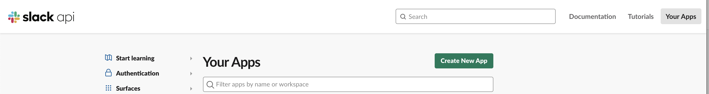
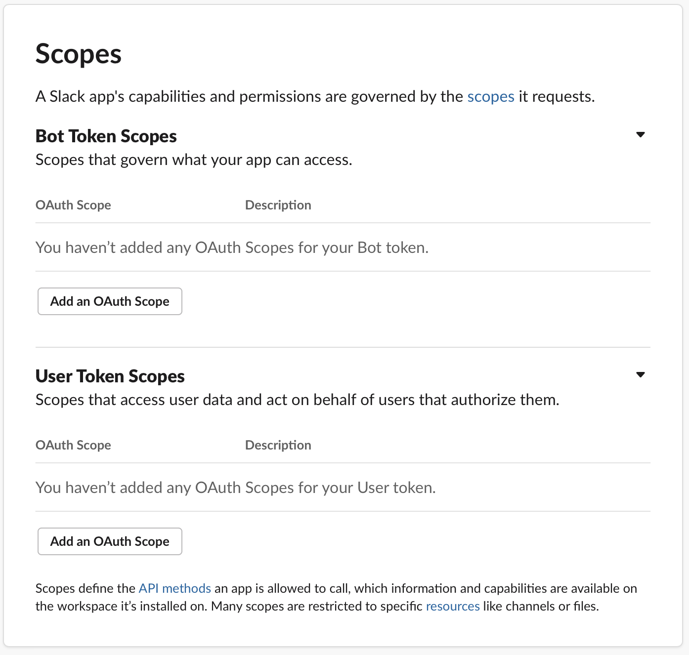
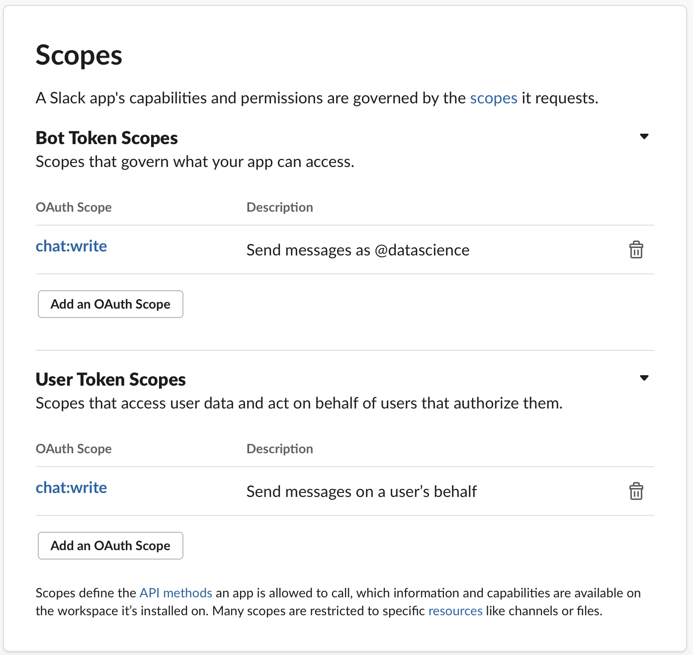
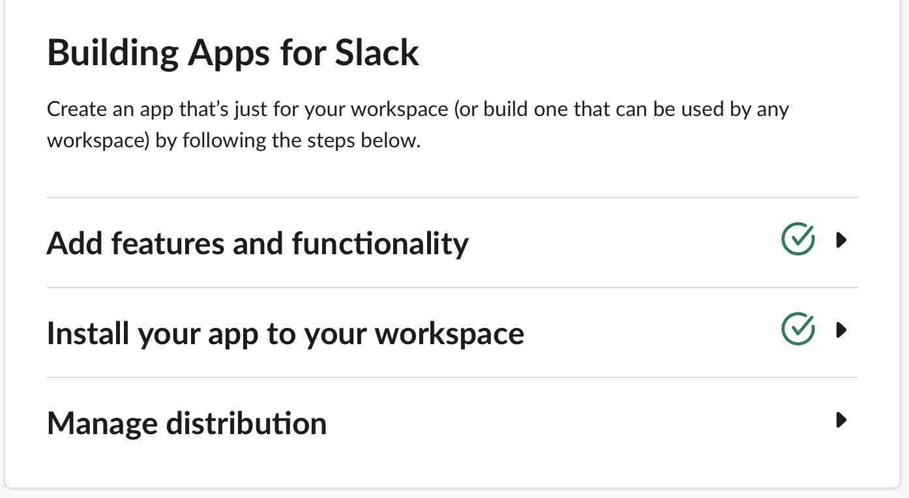
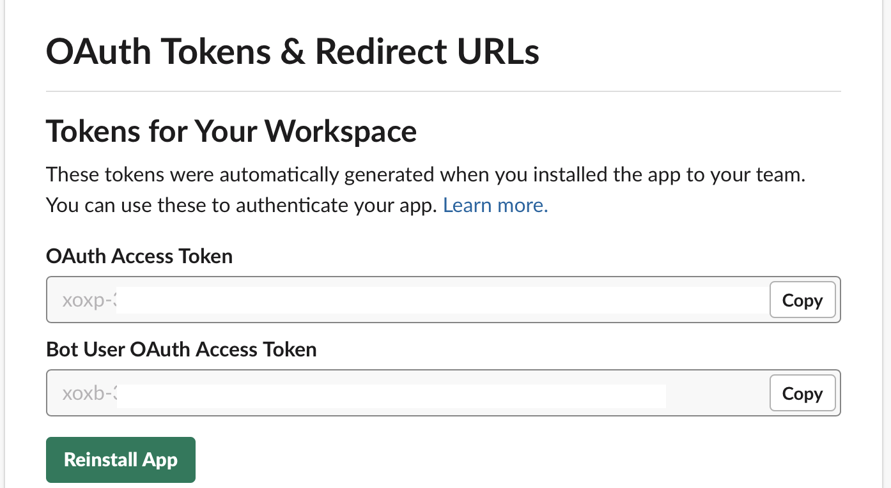
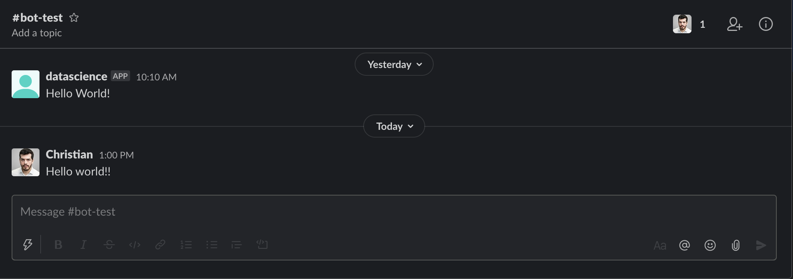
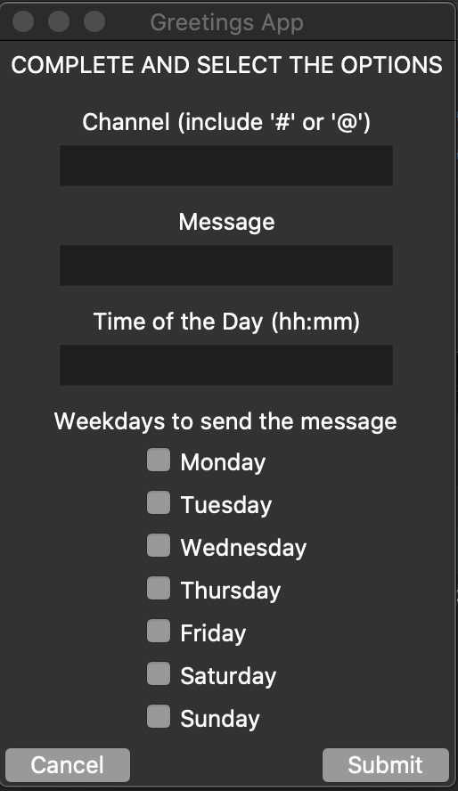
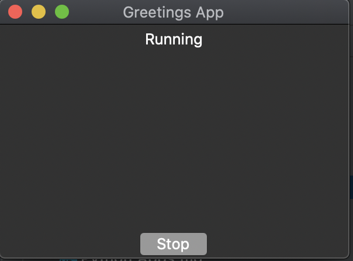
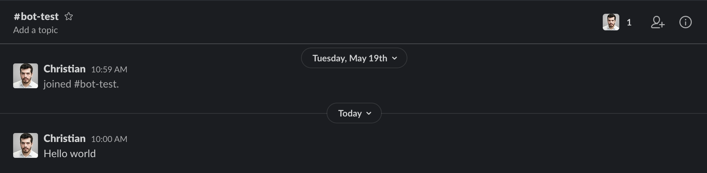
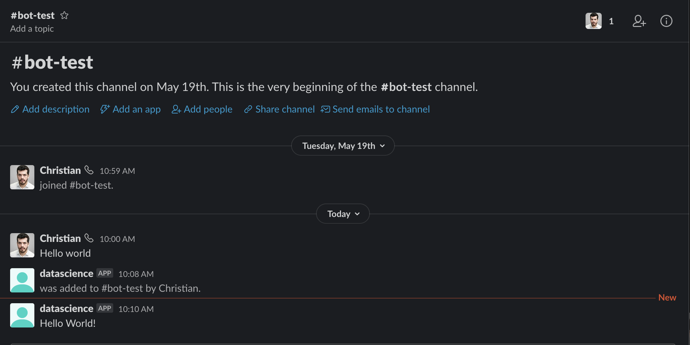

App to send messages to a Slack channel (using Python)
Posted on Sun 01 November 2020 in Other
In this post I will share a simple implementation of an app to send automatic predefined messages to a channel or contact in Slack on a specific time and dates using Python.
The post is broken down into 3 sections:
- Pre-requisites. Shows how to create an app in Slack (to use the Slack API) and to set up rights to communicate with it.
- Sending messages with Python. A quick walk-through of how to send messages using the slackclient package.
- A simple app to send Messages. An app/project to send automatic static messages on programmed dates and time.
Pre-requisites
Create Internal Slack App
We will build an App within slack that will make use of the Alack API to help us communicating with the workspace using python.
Create the App
Sign in, select the workspace you want to communicate with, click on Build and once there click on Create New App.

A new window will pop-up requesting the a "Name" for the app and the workspace. Example, I will name mine "Data Science".
Set up permissions
Once created we need to set up the proper permissions to allow the interaction between the app and the Slack API.
First click on your newly created app (in our example DataScience), you should see now the Settings of your app. Here you need to do 2 things: - Add functionalities, type of actions the app can do (there are tons of options, see official site) - Install the app in the workspace, so you make use of it.
Our app will only send messages on behalf of a user or group, go to OAuth Tokens & Redirect URLs and scroll down to Scopes

There are two options, for users and bots, we will add both (user and robot) tokens since I want my app to be able to send messages as "datascience" but also as my "Add and OAuth Scope and find the "chat:write" option and select it for both the Bot and User.

Now you need to install the app. Still on OAuth & Permissions, go to the OAuth Tokens & Redirect URLs section and click on Request to Install the app. Add an optional message for the admins (of your slack) to approve your request.
Once it's been approved you will see that The Basic Information has changed, reflecting your additions. 
Go back to the OAuth & Permissions menu and you will see there the tokens for the bot and your user (tokens are automatically generated).

Now you have everything set up, you can go to python to start sending messages.
Sending messages to Slack using Python.
I'll make use of the slackclient package with Python 3.
First install the package:
pip install slackclient
The package has tools that help you send messages straight out of the box. For a simple test import WebClient, initialise it with your token and then simple use the chat_postMessage method to send your message.
from slack import WebClient
token = 'your-token'
client = WebClient(token)
client.chat_postMessage(channel='#bot-test', text="Hello world!!")

The query will send the message and return a response object slack.web.slack_response.SlackResponse. If the message was successfully sent it will return an "ok" if not, it will return an error.
For a better tracking of the event, make sure to assign the response to a variable. Then you can access the content of the response stored in data. Example:
from slack import WebClient
token = 'your-token'
client = WebClient(token)
response = client.chat_postMessage(channel='#bot-test', text="Hello world!!")
response.data
You will find useful information in response.data in the form of a dictionary containing among other things:
- An indicator if the message was sent: 'ok'
- Message data, including the message itself, user id, time stamp, and the bot profile.
Example:
{'ok': True,
'channel': 'C00001AAA1A',
'ts': '1604496007.000500',
'message': {'bot_id': 'B0001AAAAA1',
'type': 'message',
'text': 'Hello world!!',
'user': 'UA1AAA01A',
'ts': '1604496007.000500',
'team': 'T0001AAAA',
'bot_profile': {'id': 'B0001AAAAA1',
'deleted': False,
'name': 'DataScience',
'updated': 1589887375,
'app_id': 'A001AAA0AAA',
'icons': {'image_36': 'https://a.slack-edge.com/80588/img/plugins/app/bot_36.png',
'image_48': 'https://a.slack-edge.com/80588/img/plugins/app/bot_48.png',
'image_72': 'https://a.slack-edge.com/80588/img/plugins/app/service_72.png'},
'team_id': 'T0001AAAA'}}}
You can use that info to wrap the code above into a tryCatch statement as shown in the package documentation:
import os
from slack import WebClient
from slack.errors import SlackApiError
client = WebClient(token=os.environ['SLACK_API_TOKEN'])
try:
response = client.chat_postMessage(
channel='#random',
text="Hello world!")
assert response["message"]["text"] == "Hello world!"
except SlackApiError as e:
# You will get a SlackApiError if "ok" is False
assert e.response["ok"] is False
assert e.response["error"] # str like 'invalid_auth', 'channel_not_found'
print(f"Got an error: {e.response['error']}")
A simple app to send Messages
You can find here one simple project I made to send static messages to a slack group/contact on a specif time for every day you select.
Clone the repository, go to tokens/key.json and add your token from your slack app.
slack_app
|-slack_app
|-tokens
|-key.json
|-License
|-README.md
|-morning_app.py
Change the text <your-key-token-here> with your own key
{
"API_TOKEN": "<your-key-token-here>"
}
Before running the app make sure you have installed the project package dependencies, see README.md.
pip install slackclient
Go to the main directory of the project and execute the morning_app.py file (Make sure you run it using python 3 as it won't run with python 2)
pyton morning_app.py
A window will pop up requesting:
Channel: the name name of channel or user that will receive the messages (include "#" or "@" accordingly). Example #bot-test
Message: the text you want to share. Example Hello world
Time of the Day: The time you want the message to be sent in hh:mm format. Example 10:00 this will send the message at 10am (if you want 10 pm instead, write 22:00)
Weekdays to send the Message: Select all the days you want the same message to be sent. Example We will send it every Tuesday

After selecting your options click Submit.
A new window will pop up indicating that the program is running.

It will remain running until you stop it. For example if you marked "Tuesday" in your options, it will send the message every Tuesday until you stop the app.
If you added your user key you should see something like:

If you added the bot token:

Feel free to play with the project as you wish, for example you can use it as template to create more advanced/interesting automation projects.